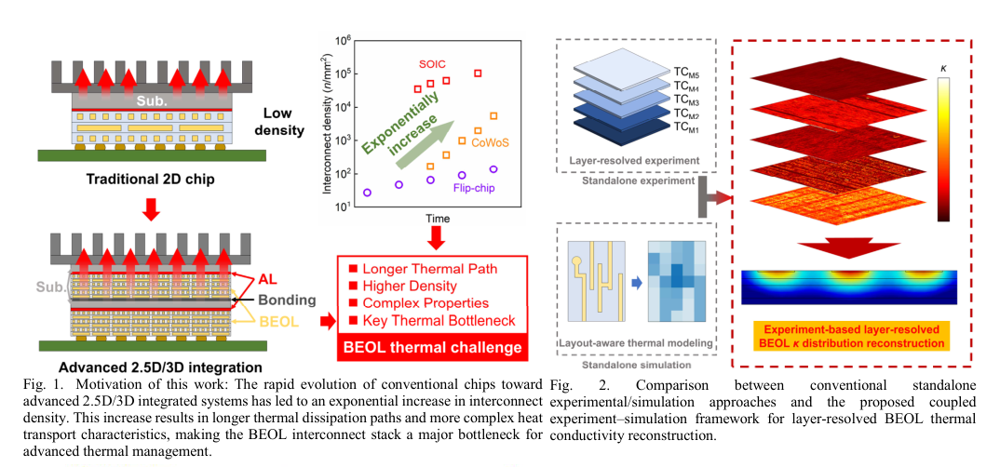
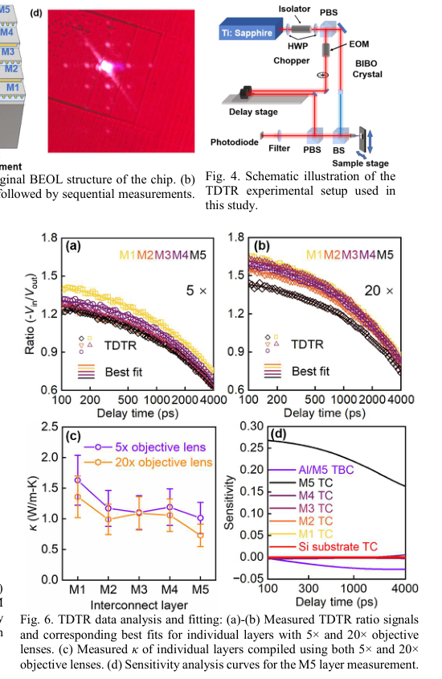
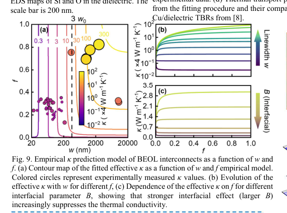
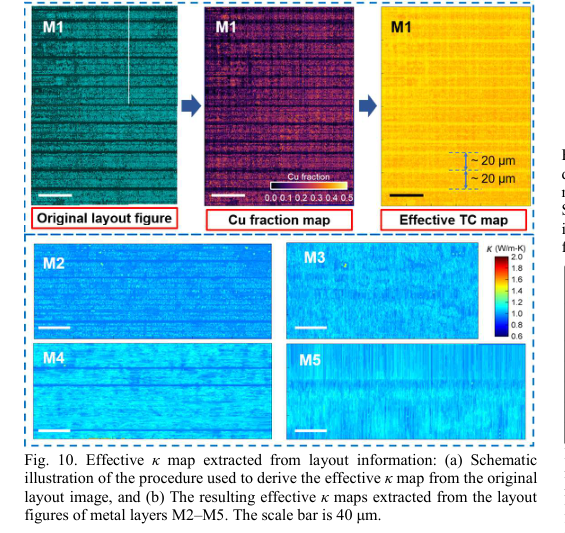
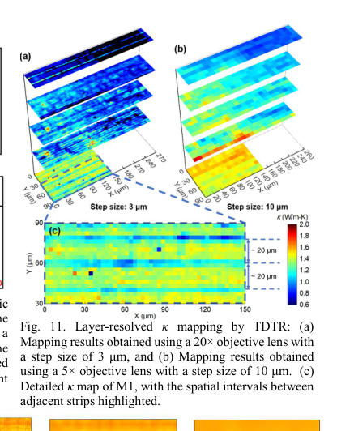
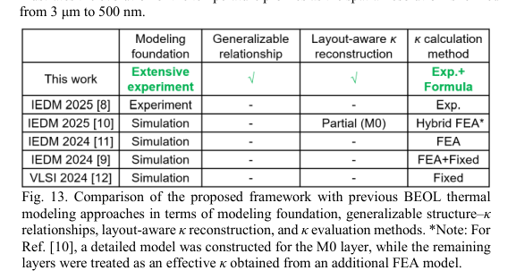

本报告由大模型自动生成，可能存在理解、归纳或数据转述错误；请以原论文为准。 Predictive Structure to Thermal Conductivity Modeling Framework for BEOL Interconnect Stacks in Advanced Technology Nodes Enabled by Extensive Layer Resolved Thermal MeasurementsZifeng Huang, Yiyang Sun, Tianyu Jia, Runsheng Wang, Zhe Cheng · arXiv (Cornell University) · 2026 · 原文 · PDF 图表提取提示：报告提到的 Figure 12, Figure 3, Figure 5, Figure 7 未能自动裁出；请查看原论文 PDF。 报告模型：gemini-3.1-pro-preview / high 这是一篇关于先进半导体制造节点中，芯片后端互连线（BEOL）热导率（Thermal Conductivity）预测模型的系统性研究。为了帮助您准确理解本文，我们在进入具体章节前，先建立理解本文所需的系统全貌和基础背景知识。 系统全貌与核心背景补充芯片的层级结构与热流动：现代集成电路（芯片）在物理结构上主要分为两部分。最底层是前端（FEOL, Front End of Line），这里包含了数以亿计的晶体管，是芯片进行计算和产生热量的主要源头。在晶体管上方，是**后端（BEOL, Back End of Line）**互连层，它由多层极其细微的金属线（通常是铜，Cu）和包裹它们的绝缘介质（Dielectric）交替堆叠而成，负责把下层的晶体管连接起来传递电信号。在传统的二维芯片中，前端产生的热量主要向下通过硅基底和散热器排走。 本文讨论的层级与问题背景：本文的研究对象完全聚焦于上方的 BEOL 互连层。随着芯片向三维集成（3D-ICs，即把多层晶体管芯片垂直堆叠）发展，热量很难再单一地向下排散，大量热量必须向上穿过极其复杂的 BEOL 互连层。然而，随着工艺进步（本文基于 22 纳米节点），这些铜互连线变得极其狭窄（纳米级）。在宏观物理中，铜是优良的导热体；但在纳米尺度下，由于尺寸效应和极其密集的材料交界面，热量在通过这些细线和绝缘层时会遇到巨大的阻力。传统的芯片热力学仿真往往假设这一层是一个均匀的、固定参数的材料，这在先进工艺下会导致严重的温度预测误差。本文的核心目的，就是通过真实的物理测量，建立一个能够根据芯片设计图纸（Layout，包括走线宽度、铜的密度等结构特征）自动且准确预测局部导热能力的数学模型。 以下是对论文各章节的详细拆解与逻辑分析： I. Introduction (引言)引言部分确立了研究的动机和当前的行业痛点。作者指出，在 3D-ICs 中，BEOL 互连栈引入了更长、更复杂的热传输路径。同时，不断增加的互连密度进一步加剧了热积累（如论文 Fig. 1 所示，展示了从传统 2D 芯片到 2.5D/3D 封装演进过程中，热密度呈指数上升，BEOL 成为热瓶颈）。  作者在这里引出了一个关键论点：在先进 BEOL 工艺中，互连层的导热能力（由有效热导率 表示，单位为 W/m-K）已经不再仅仅由块体铜和介质材料的固有属性决定，而是受到纳米级结构特征的强烈支配。这些结构特征包括互连线宽（Linewidth）和日益增加的铜/介质界面的贡献。因为传统的热模型忽略了这些结构带来的巨大差异，导致无法准确预测散热行为。 为了解决这个问题，作者提出了一种“基于实验推导的、感知结构的热导率（）建模框架”。该框架结合了高精度的热学测量技术（TDTR）、有效介质理论（EMT, Effective Medium Theory，一种通过微观成分的比例和属性来推导复合材料宏观物理性质的物理模型），以及真实的芯片布局信息，旨在建立一个通用的经验公式，实现对整层芯片和局部区域热导率的精确预测（如 Fig. 2 所示的研究全景对比图）。 II. Experimental Setup and Sample Preparation (实验设置与样品制备)本节详细说明了作者是如何在真实的物理硬件上获取数据的，这涉及到了物理约束和测量方法的选择。 为了获得真实的 BEOL 结构数据，作者选用了一块商业 22 nm 工艺节点的芯片。为了将测量误差降到最低并减少模型拟合时的未知参数，作者选择从最底层的五层互连层（M1 至 M5，即最靠近晶体管的金属层）开始测试。
III. Results and Discussion (结果与讨论)本节是论文的核心，分为现象观察、微观溯源、理论拟合和模型建立四个逻辑步骤。 1. 现象观察：极低的热导率 作者在进行 TDTR 测量时，分别使用了 5 倍和 20 倍的物镜（Fig. 6a-b）。作者做出这一实验选择的原因是为了改变激光光斑的大小，从而排除光斑尺寸对提取出的 值的影响，证明测量结果的可靠性。结果（Fig. 6c）显示，无论用哪种镜头，测量出的有效 值都极其低下，逼近 1 W/m-K（作为参考，块体铜的热导率约为 400 W/m-K）。作者推断，这是由于极其密集的纳米级界面以及包裹铜线的钽（Ta）阻挡层引入了巨大的热边界电阻（TBR, Thermal Boundary Resistance，指热量在穿过两种不同材料边界时遇到的阻力）。  2. 微观溯源与 EMT 模型拟合 为了证实上述推断，作者使用了明场透射电镜（BF-TEM）和 X 射线能谱分析（EDS，用于显示元素分布）观察物理结构（Fig. 7）。图像证实了极其狭窄（小于 100 纳米）的铜线被致密的 Ta 阻挡层包围。 基于此，作者在 Fig. 8 引入了有效介质理论（EMT）。他们将导致 下降的原因拆分为两个物理机制：
3. 建立经验预测模型（本文最大贡献） 虽然 EMT 揭示了物理本质，但每次都要做电镜和光电测试显然无法用于工业芯片设计。因此，作者基于超过 40 组不同层的 TDTR 测量数据，总结出了一个高度泛化的经验数学模型（Fig. 9）。该公式旨在只输入两个芯片设计参数——线宽（）和铜的体积分数（），就能直接计算出该区域的有效热导率 ：  公式变量逐一解释：
结论推演：模型最佳拟合得出 nm。该公式揭示了一个反直觉的权衡现象（Fig. 9b-c）：在超窄线宽下，一味地增加铜的比例（增大 ）并不能提高导热率，反而可能因为引入了更多的界面阻力（TBR惩罚）而降低导热率。只有在线宽较宽时，增加铜占比才有益。 4. 布局感知的空间热导率重建 为了在二维平面上重现局部热导率的不均匀性，作者提出了空间重建方法（Fig. 10）。他们将真实的芯片设计图纸（Layout）按 500 nm 的单元尺寸（cell size，这是作者在计算效率和分辨率之间做出的设计选择）进行网格离散化。提取每个网格内的 和 ，代入前文建立的模型，从而生成了一张高分辨率的二维 分布图。为了验证这一基于纯图纸的预测，作者再次使用 TDTR 以 3 μm 和 10 μm 的空间步长进行实际扫描（Fig. 11），结果显示预测模型准确捕捉到了相邻低热导率条带间的分布特征。   IV. Finite Element Simulation (有限元仿真)本节是将作者提出的模型应用于实际散热预测的验证。作者使用了 COMSOL 软件进行有限元分析（FEA, Finite Element Analysis，一种将连续空间划分为离散网格以数值求解热传导偏微分方程的方法）。 为什么做这个实验：在传统的芯片仿真中，往往将一整层互连层视为一个整体，赋予一个“平均”的热导率。作者想证明，如果不考虑局部的极低热导率区域，会导致严重的设计失误。 实验设置与结果（Fig. 12）：作者在仿真中保持总发热功率完全相同，但改变了输入的热导率 分布图的空间分辨率（从 10 μm 一直细化到模型支持的 0.5 μm）。结果显示（Fig. 12c），空间分辨率越精细，仿真得出的最高温度上升幅度就越大。 推断逻辑：因为精细的网格捕捉到了那些局部被介质包裹、热导率极差的“死角”（热点），热量在这些局部微小区域无法散除。这证明了传统的“平均化材料属性”模型会严重低估局部的热点（Hotspot）温度，凸显了引入真实、高分辨率 分布进行 BEOL 热分析的绝对必要性。 V. Conclusion (结论)作者总结了他们建立的这套框架的价值所在：通过大规模 TDTR 实验推导出结构-热导率经验模型，再利用真实的芯片图纸重建分布。如 Fig. 13 的对比表格所示，相比于以前纯粹依赖仿真或需要复杂全结构建模的方法，本框架实现了一种“通过简化的 提取方法实现高效预测，同时保持物理相关性”的折中与突破。  全文主线与局限性分析贯穿全文的主线： 芯片由传统的平面走向 3D 堆叠，导致散热路径被复杂的后端互连线（BEOL）严重阻挡（发现问题）。由于纳米尺度下界面热阻剧增，传统的宏观材料热力学模型完全失效。为了准确评估温度以防芯片烧毁，作者通过直接破坏物理芯片并用激光（TDTR）测量其真实散热能力（获取真值），从中分离出不同因素的影响，并总结出一个纯数学的经验公式（建立模型）。有了这个公式，未来的芯片设计师只需要输入新芯片的图纸（线宽和铜密度），就能直接生成一张高精度的散热地图（解决问题），并将其导入 COMSOL 证明了传统仿真会严重低估芯片的热点温度风险。 关键假设、局限性与推广边界：
|